Tokaimura, Ibaraki: things to do, food and stays
Tokaimura · Ibaraki
Tokaimura
Highlighted on the Ibaraki map.

Stay
ホテルエリアワン東海（HOTEL Areaone）

Hotel Eriawan Tokai (HOTEL Areaone)
Hotel in Shirakata, Tokaimura with breakfast available and parking.
Dining
牛新 東海店

Ushi Shin Tokai
魚康
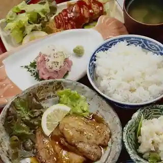
Sakana Yasushi
まつ食堂
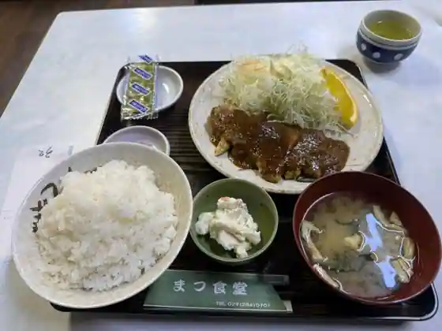
Matsu Shokudo
ラーメン ツバキヤ
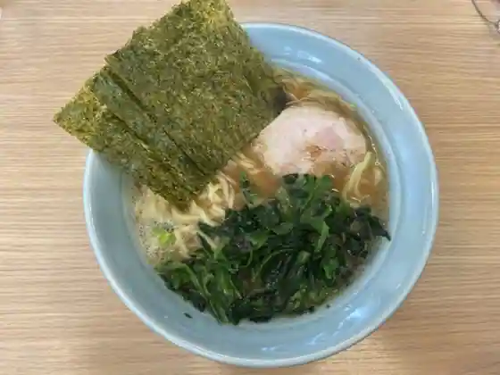
Ramen Tsubakiya
なか食堂
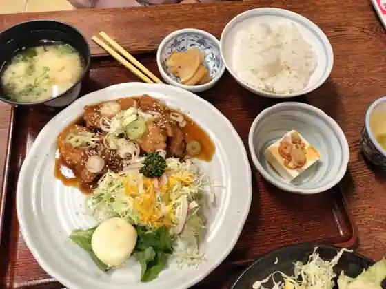
Naka Shokudo
ザ定食&ドリンクス 東里
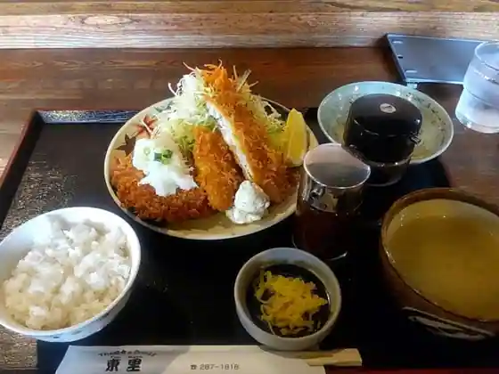
Za Teishoku & Dorinkusu Aizato
東海パーキングエリア（下り線）フードコート
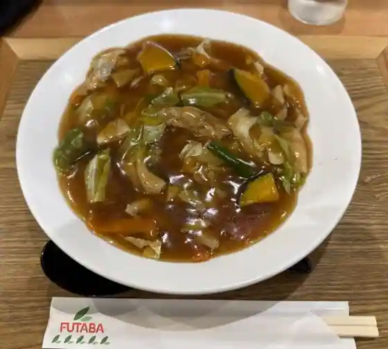
Tokai Pakingueria (Kudari Sen) Fudokoto
ピッツェリア ラ ジネストラ
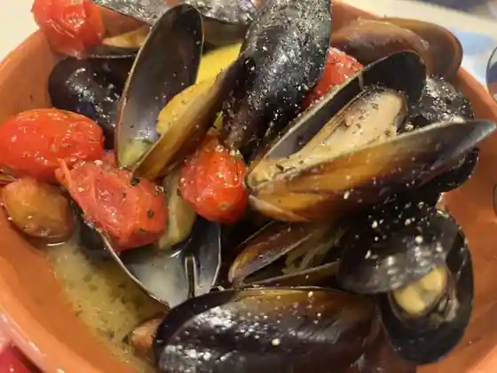
Pizzeria Ra Jinesutora
麺屋 いろは
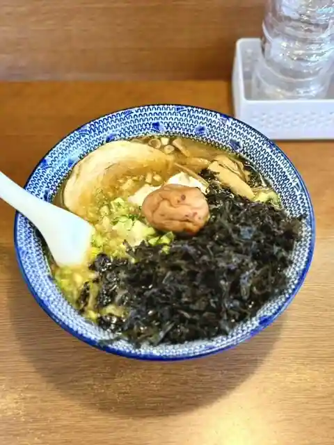
Men Ya Iroha
トラットリア パラン
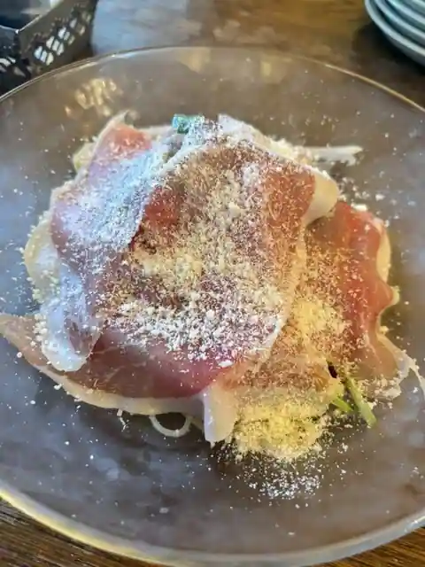
Trattoria Paran
麺屋酒家 鉄風
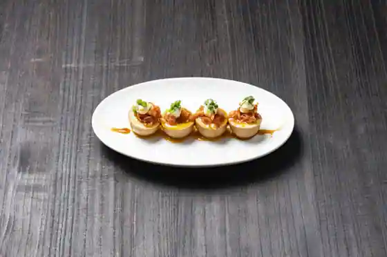
Men Ya Shuka Tetsu Kaze
手打ち讃岐うどん こざわ
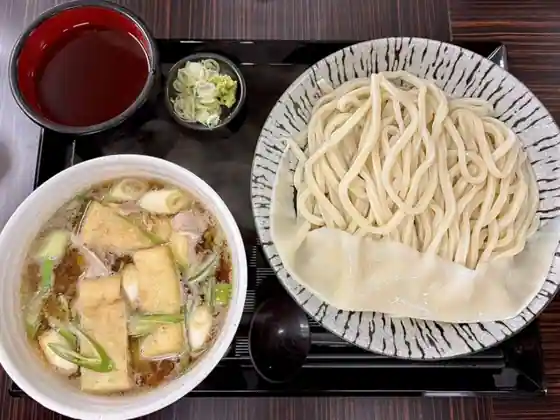
Teuchi Chi Sanuki Udon Kozawa
レタス・カフェ
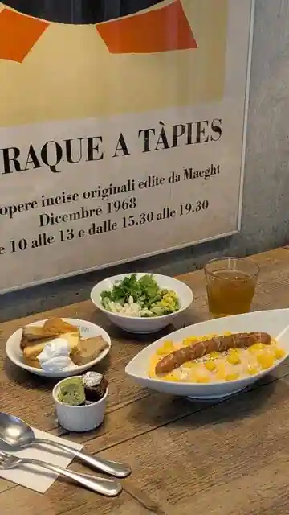
Retasu Cafe
KUROMATSU COFFEE
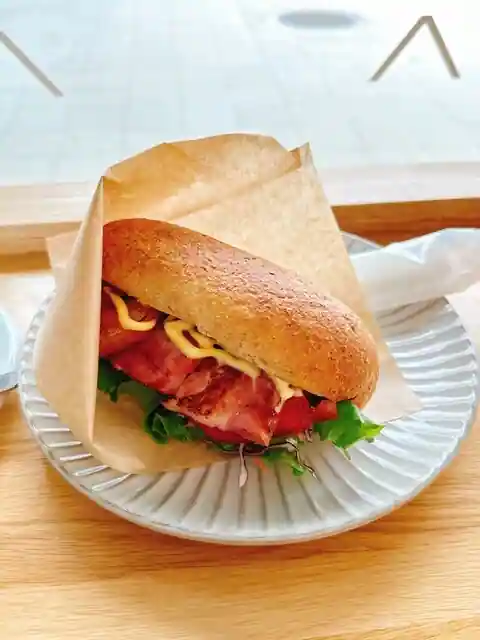
KUROMATSU COFFEE
○祐
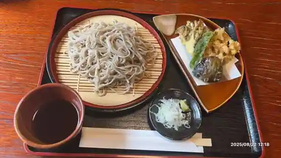
Suke
東海パーキングエリア（上り線）フードコート
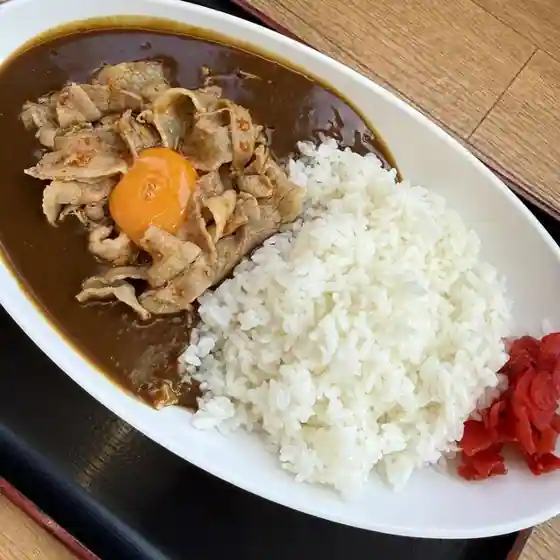
Tokai Pakingueria (Nobori Sen) Fudokoto
お食事処 かい華
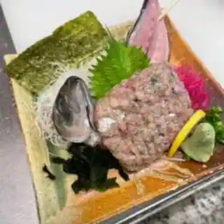
O Shokuji Tokoro Kai Hana
クローバー 本店
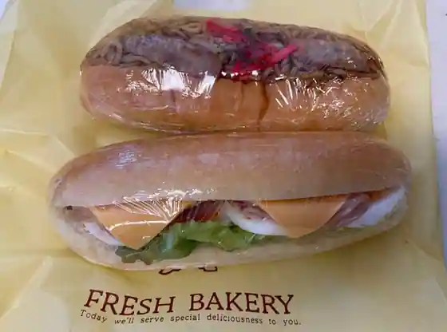
Kuro Bar Hon
うどん市 村松店
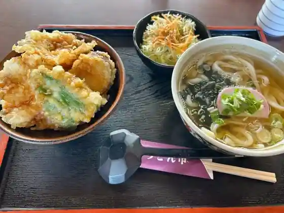
Udon Shi Muramatsu
四季菓子 Village
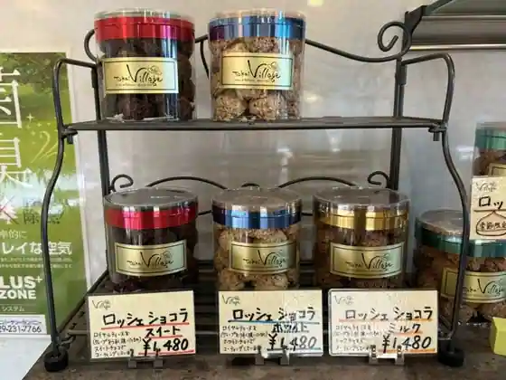
Shiki Kashi Village
グルービー 東海本店
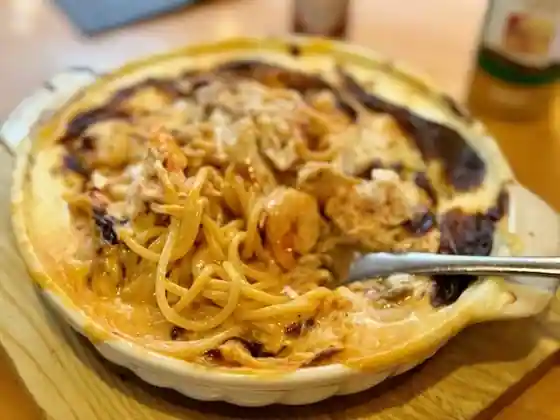
Gurubi Tokai Hon
旭川らあめん もぐり
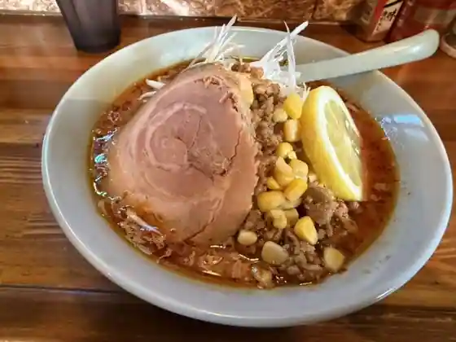
Asahikawa Ramen Moguri
ワンダーボックス
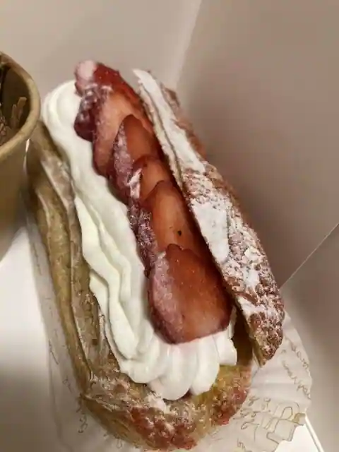
Wandabokkusu
ルアール
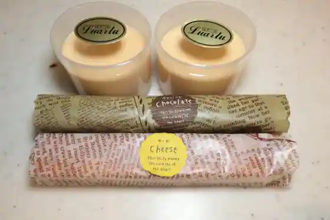
Ruaru
Sights
Muramatsu Yama Kokuzo Do

Akogigaura Park (Akogigaurakoen)
Genshiryoku Science Museum
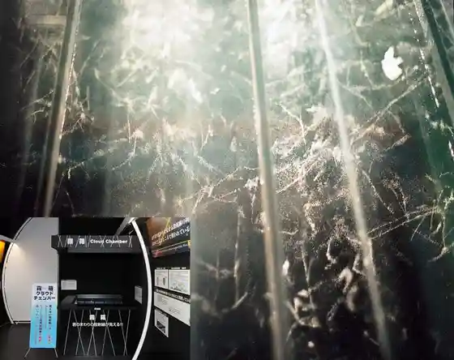
Fujito Ichigo Sono
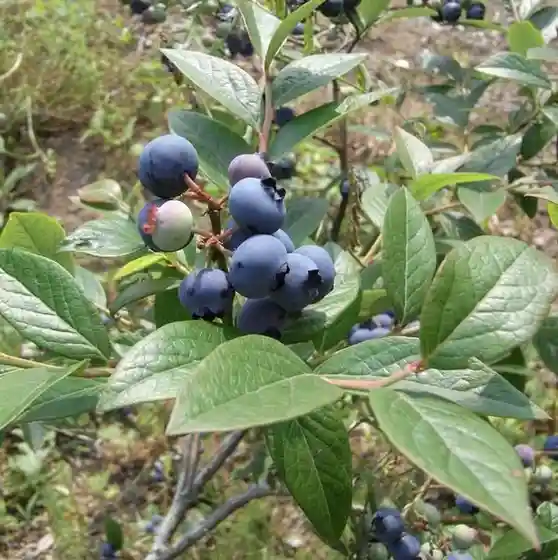
Mitsubishi Genshi Nenryo
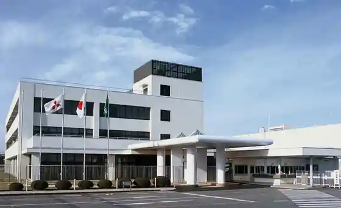
Mito Hakkei (Muramatsu Seiran)
Terunumakatsuichi Shoten (Nature Shoku no O Mise Hinata)
Tokaimura Famazumagatto
Kajuaruresutoran Gurunuiyu
Sakana Yasushi
Udon City Tokaimura Mise
Hana Ichimonme